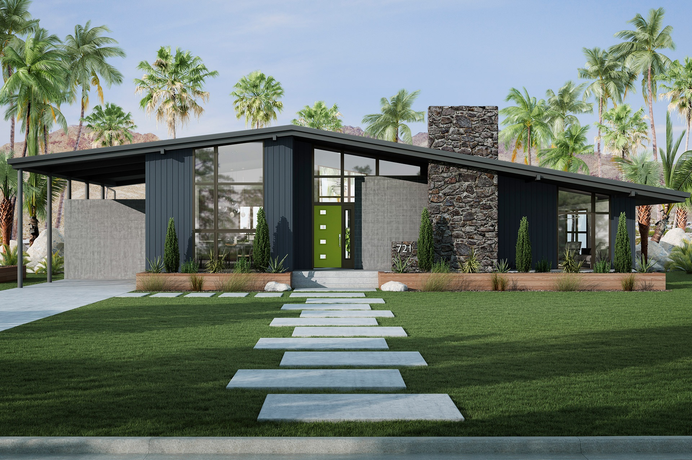

The Craftsman style is all about attention to detail, handcrafted elegance, and an appreciation for natural materials.
Rooted in the Arts and Crafts movement, Craftsman homes are distinguished by their exposed rafters, thick columns, overhanging eaves, and the use of warm wood tones.
These homes are designed to be both functional and aesthetically pleasing, with a focus on built-in furniture, custom woodwork, and craftsmanship that speaks to the integrity of the design.
Key Features:
Low-pitched rooflines with wide eaves
Exposed beams and rafters
Use of natural materials like wood, stone, and brick
Built-in cabinetry, benches, and shelves
Handcrafted details that highlight artistry and craftsmanship
Craftsman homes are perfect for homeowners who appreciate fine workmanship and a home that feels rooted in tradition but designed for modern living.
Mid-Century Modern Homes – Retro Appeal with a Modern Twist

Style Overview
Mid-century modern homes are known for their retro appeal and cutting-edge designs.
These homes focus on bringing the outdoors in with expansive glass walls, flat roofs, and open floor plans.
Bold colors, geometric shapes, and clean lines define this iconic style, offering a mix of form and function.
Key Features:
Clean lines and angular forms
Large windows to connect with the outdoors
Minimalist interiors with functional layouts
Use of natural materials like wood, stone, and glass
Iconic design elements such as butterfly roofs and open beams
Ideal For:
Those who love the retro charm of the 1950s and 1960s but want modern functionality, energy efficiency, and a seamless indoor-outdoor lifestyle.